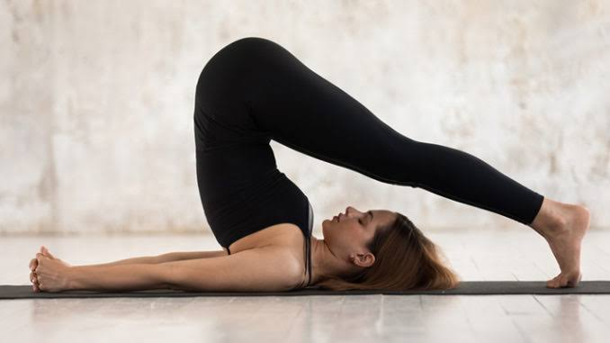
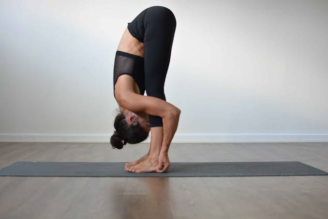
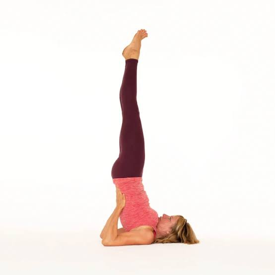
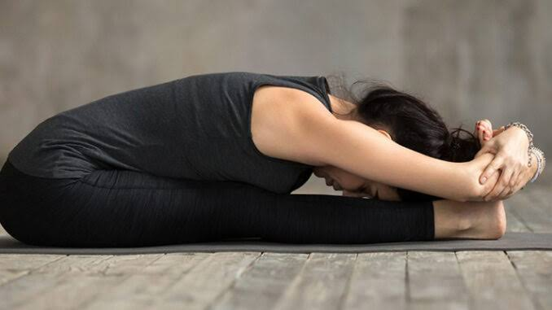
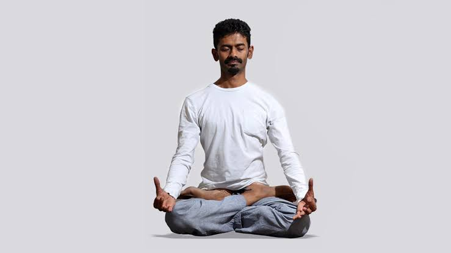

Yoga

Halasana Steps
1.Lie on your back with legs join together.
2.Keep the palm flat on the ground.
3.While exhaling press the palm on the ground and raise both the legs upwards straight then try to touch the ground just behind.
4.Breathe slowly and hold the posture for several minutes.
5.Now slowly release the pose to return to Shavasana.

Padahastasana Steps
1.Stand straight with feet 2 inches apart.
2.Inhale slowly and raise the arms up.
3.Stretch up the body from the waist.
4.Exhale and bend forward until both palms rest on the ground.
5.Maintain this final posture for 10-30 seconds with normal breathing.
6.Now inhale, come up slowly to the upright position.

Sarvangasana Steps
1.Lie down on your stomach.
2.Raise your legs slowly upward and bring it to 90 degree angle.
3.Raise the legs; abdomen and chest try to form a straight line.
4.Try to maintain the pose up to 30 seconds or more.
5.Slowly return back to the original position.

Paschimottanasana Steps
1.Bring your arms straight up over your head, reaching toward the ceiling.
2.Inhale and draw your spine up long.
3.As you exhale, begin to come forward, hinging at your hips.
4.Keep the neck as the natural extension of your spine, neither cranking it to look up nor letting it go completely.
5.Take hold of your ankles or shins, whichever you can reach.

Padmasana Steps
1.Sit with the legs stretched forwards.
2.Slowly fold one leg and place the foot on the thigh of the opposite leg with the heel in contact with the front of the lower abdomen.
3.Fold the other leg in the same way.
4.Both knees should rest comfortably on the floor in the final stage.
5.The hands can be placed either on the knees in the Dhyana mudra.
To Keep in Mind:
It is essential that during practice, the older people should not push themselves and do only as much as their body permits.
Even a long duration of a yoga session is not suitable for them. Short and simple is ideal.